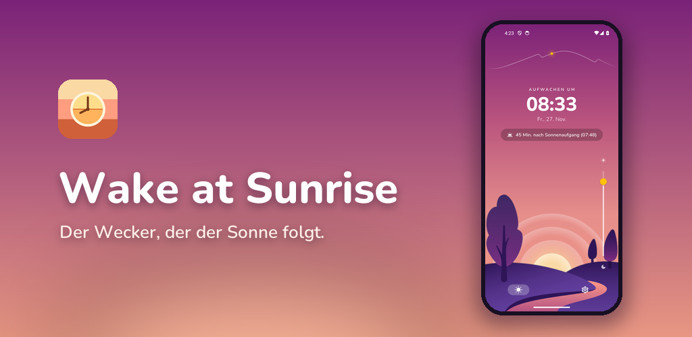
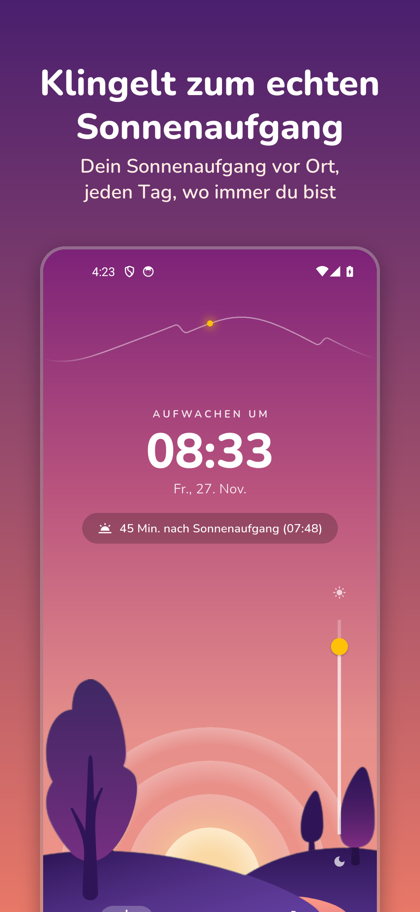
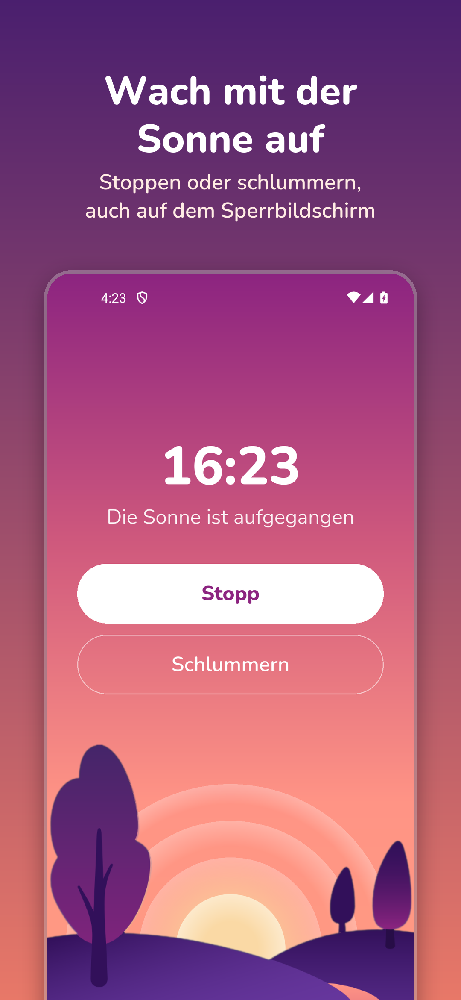
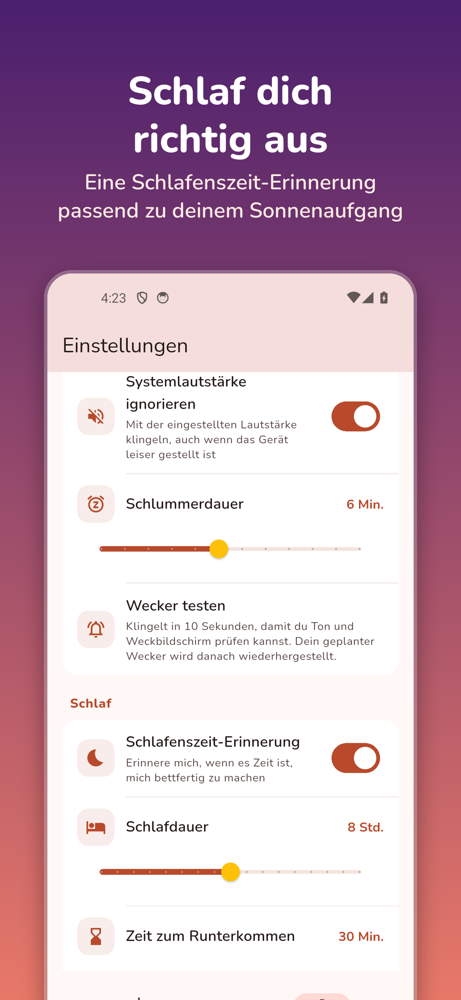

Pressemappe
Aktualisiert am 18. November 2026 ·
Wake at Sunrise ist ein Android-Wecker, der zum echten Sonnenaufgang dort klingelt, wo du bist – berechnet auf dem Handy – und mit ihm jeden Tag ein, zwei Minuten durch die Jahreszeiten und über Zeitzonen hinweg wandert. Nutzer wählen, ob sie bei Sonnenaufgang oder beliebig viele Minuten davor oder danach aufwachen. Die App ist kostenlos, mit einem optionalen Premium für sanfte Wecktöne und Schlafenszeit-Erinnerungen; es gibt kein Konto und keine Werbung, und der Standort verlässt nie das Gerät. Entwickelt wird sie von einem unabhängigen Entwickler.
| Name | Wake at Sunrise |
|---|---|
| Entwickler | Unabhängiger Entwickler |
| Plattform | Android 7.0 und höher · iOS in Entwicklung |
| Veröffentlicht | 16. November 2026, bei Google Play |
| Preis | Kostenlos · optionales Premium, jährlich oder einmalig auf Lebenszeit |
| Sprachen | Englisch, Portugiesisch (Brasilien), Deutsch, Schwedisch, Norwegisch, Dänisch, Finnisch, Niederländisch, Spanisch, Russisch |
| Datenschutz | Kein Konto, keine Werbung, kein Tracking; Sonnenaufgang auf dem Gerät berechnet |
Jetzt beiGoogle Play
Bald imApp Store
Bilder









Links
Kontakt
Für Interviews, Rezensionscodes oder alles andere schreib an die E-Mail-Adresse des Entwicklers.